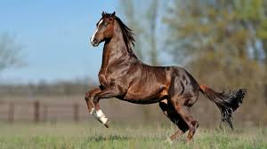

1. Origem
História: Desenvolvido na Inglaterra no século XVII.
Ancestrais: Resulta do cruzamento entre éguas inglesas e garanhões orientais (árabes, turcomanos e berberes).
Objetivo: Criar um cavalo rápido, ágil e resistente para corridas.
2. Características Físicas
Altura: Geralmente entre 1,60 e 1,70 m na cernelha.
Constituição: Corpo esbelto, musculoso e elegante.
Cabeça: Longa e estreita, com perfil reto ou ligeiramente côncavo.
Membros: Finos, mas fortes, com boa angulação.
3. Temperamento
Comportamento: Geralmente enérgico e sensível.
Treinabilidade: Inteligente e aprende rapidamente, mas pode ser nervoso se não for bem manejado.
Interação: Pode ser amigável, mas tende a formar laços fortes com um único cavaleiro.
4. Utilização
Corridas: Principalmente utilizados em hipódromos.
Esportes Equestres: Também são populares em competições de saltos, adestramento e eventos.
Reprodução: Considerados excelentes reprodutores, influenciam muitas outras raças.
5. Cuidados e Manutenção
Alimentação: Dieta rica em forragem e ração específica para manter a energia.
Exercício: Necessitam de atividade regular para evitar problemas comportamentais.
Saúde: Monitoramento constante é crucial; vacinas e cuidados dentários são importantes.
6. Cuidado com a Reprodução
Genética: Reprodutores de alta qualidade são essenciais para manter as características da raça.
Ética: Preocupações com a consanguinidade e saúde genética.
7. Famosos Puro Sangue Inglês
Cavalos icônicos: Nomes como Secretariat e Man o' War são lendários no mundo das corridas.
Influência: Muitos Puro Sangue se tornaram fundadores de linhagens renomadas em outras raças.
8. Impacto Cultural
Apoio à indústria: O Puro Sangue Inglês é uma parte vital da indústria de corridas equestres global.
Representação em mídia: Frequentemente aparece em filmes, livros e eventos culturais.
CONCLUSÃO
O Puro Sangue Inglês é uma raça fascinante, admirada por sua velocidade, beleza e versatilidade.
Seu legado na história das corridas e do esporte equestre continua a influenciar tanto criadores
quanto amantes de cavalos ao redor do mundo.
Página inicial
Manga-Larga
Quarto de milha